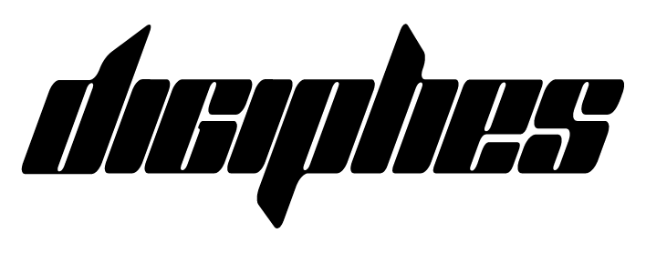

3
Years: project timeframe

IPHES-CERCA Collections Digitization
3
Years: project timeframe
15
Collections: archaeological, reference, and experimental
1
Unified access hub
Phase-based roadmap to quickly understand core project milestones.
Structuring Phase
This first phase establishes the conceptual and technical foundations of the project. Standards, data models, and shared protocols are defined, and the core infrastructure is prepared to ensure coherent and scalable digitization.
Deployment Phase
The second phase focuses on implementing the framework across selected collections. Workflows are applied in practice, teams are supported through training, and interoperability and FAIR alignment are validated.
Consolidation Phase
The final phase stabilizes and evaluates the system at laboratory scale. Adjustments are made where necessary, and a long-term roadmap ensures sustainability beyond the project timeframe.
Digitalization is the process of transforming collection workflows, metadata, and records into structured digital resources to improve access, interoperability, preservation, and scientific reuse.
Collections digitization relies on advanced data management solutions and infrastructure technologies. To learn more, click the button below.
Temporary placeholder description for this collection.
Descripción temporal de referencia para esta colección.
Descripción temporal de referencia para esta colección.
Descripción temporal de referencia para esta colección.
Descripción temporal de referencia para esta colección.
Descripción temporal de referencia para esta colección.
Descripción temporal de referencia para esta colección.
Descripción temporal de referencia para esta colección.
Descripción temporal de referencia para esta colección.
AccessDescripción temporal de referencia para esta colección.
Descripción temporal de referencia para esta colección.
Descripción temporal de referencia para esta colección.
Descripción temporal de referencia para esta colección.
Descripción temporal de referencia para esta colección.
Descripción temporal de referencia para esta colección.